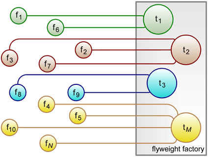

Boost.Flyweight 教程Boost.Flyweight 教程
Boost.Flyweight 教程Boost.Flyweight 教程

考虑一个需要管理大量中等尺寸对象的应用, 这些对象 potentially 需要的内存超过合理可用的范围. 当这些对象不可变 (即除了可能重新附着到一组新的状态数据之外, 它们不修改其内部状态), 并且满足一些附加条件时, 可以引入一种非常便利的优化技术, 即享元模式.
设应用程序内在给定时刻存有 N 个不同的对象, 全局取 M 个不同的值. 若 N 远大于 M, 即存在许多等价对象, 我们可以通过用句柄类替换原始对象来消除这种隐式冗余, 句柄类引用共享值对象的公共仓库, 如图所示. 作为实际值代理的句柄对象或享元, 通常只占一个指针的大小. 值类越大, N/M 比值越大, 这一技术节省的内存就越可观. 享元惯用法经典的应用例子是文字处理器: 文档中的每个字母都携带大量信息, 如 Unicode 标识符、字体、大小、排版效果等, 但鉴于文档中字母的重复度极高, 把这些字母实现为享元类使我们能轻松处理多达数十万字符的文档.
文献中对该设计模式的大多数阐述都区分享元的内部信息 (被抽出放入仓库的常量数据) 和外部可变信息, 后者与享元对象一起存储或在外部传递. 从应用设计的角度看, 这种区分分析有其价值, 但就实现而言, 外部信息对整体享元方案没有影响. 因此, Boost.Flyweight 假定本库所操作的类型完全由内部信息构成: 这使得该惯用法在 C++ 中有一种特别漂亮的实现, 其中 flyweight<T> 是一个可转换为 const T& 的不透明类型.
共享值对象的中央仓库称为享元工厂. 该组件能够定位并返回对具有给定值的对象的引用, 若先前没有存储副本则插入该值. Boost.Flyweight 以对程序员透明的方式控制享元与其工厂的交互, 因此库的偶然用户甚至无需关心此类工厂的存在. Boost.Flyweight 默认使用基于哈希容器的工厂, 预计适用于大多数情况. 若非如此, 可以定制工厂, 甚至把它替换为不同类型的另一个工厂 — 由 Boost.Flyweight 提供或由用户定义. 实现的其他方面同样可以定制和扩展.
Boost.Flyweight 的所有公开类型都位于命名空间 ::boost::flyweights 中. 此外, 主类模板 flyweight 通过一条 ::boost 声明被提升到命名空间 using. 为叙述简洁, 文档中的代码片段写作时假定以下指令生效:
using namespace ::boost; using namespace ::boost::flyweights;
尽管 Boost.Flyweight 具有控制许多内部实现方面的广泛定制框架, 本库的设计使得大多数用户无需关心甚至无需察觉其底层的复杂性. 学会把 Boost.Flyweight 当作现成组件来使用, 只需阅读基础一节, 粗读键值享元部分、享元类型打标签一节以及对一些技术问题的讨论. 配置一节讲解如何微调本库的不同内部组件. 只有非常高级的使用场景才需要实现用户提供的可插拔组件: 这在扩展一节中介绍.
最后修订于 2008 年 8 月 13 日
版权所有 © 2006-2008 Joaquín M López Muñoz. 按 Boost 软件许可 1.0 版 (Boost Software License, Version 1.0) 分发. (随附文件 LICENSE_1_0.txt 或复制于 http://www.boost.org/LICENSE_1_0.txt)